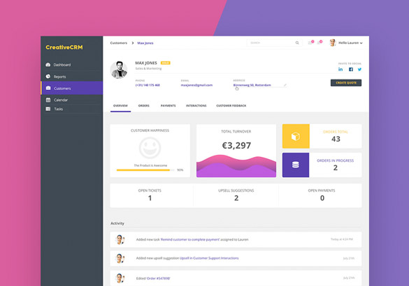

医疗项目匹配系统(对日)
该系统是针对提升医疗项目与资金对接效率的系统，实现项目提供方与资金提供方高效对接与匹配，实现全文检索精准匹配。
项目功能
全文检索精准匹配
实时通讯
不同角色之间的权限控制
多条件检索
短信及邮件的发送功能
文件上传以及导出功能
数据的处理与统计
业务逻辑的控制
项目技术及特点
该系统基于现在流行的SpringMVC框架进行开发。
使用SpringMVC+Lucene+WebSocket+Mysql+Redis，
实现全文检索匹配、实时通讯、权限控制等逻辑功能
采用先进的bootstrap实现PC及移动设备网页的自适应
并使用JQUERY控制页面响应，利用AJAX实现前后台的数据传输
使用MYSQL实现对数据库的增删改查
利用selenium实现自动化测试，兼容ie/chrome/firefox等主流浏览器